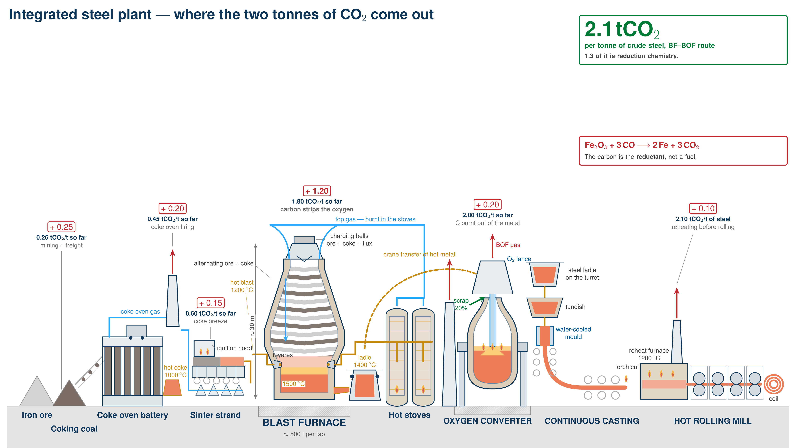
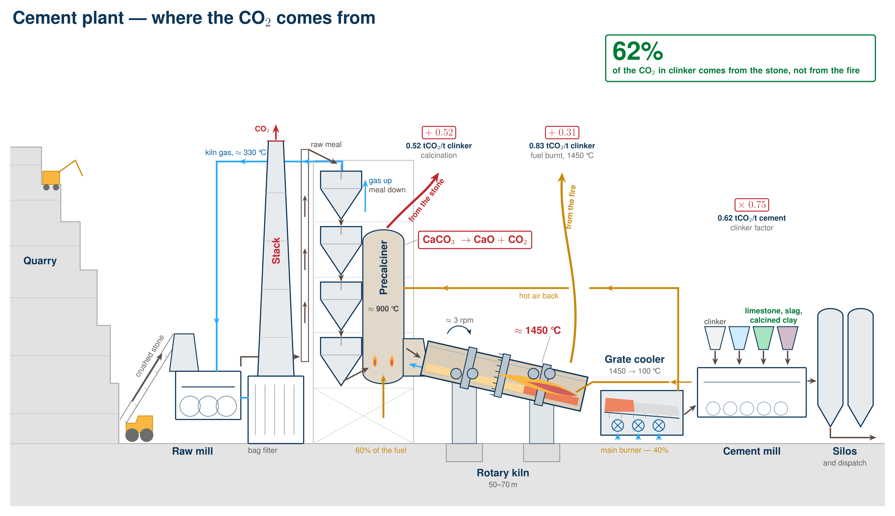
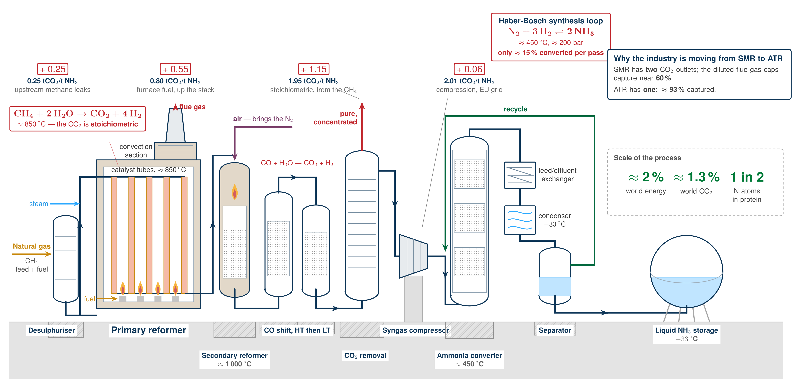
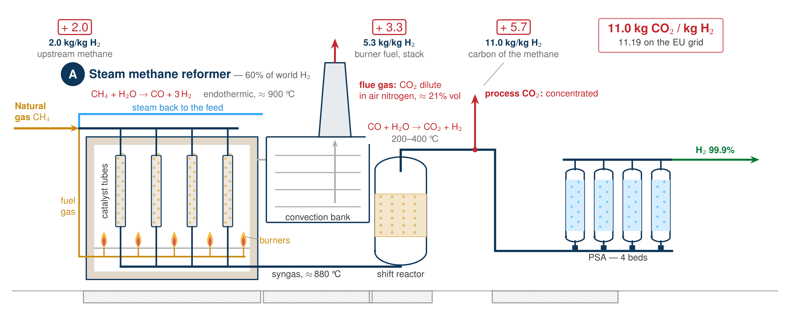
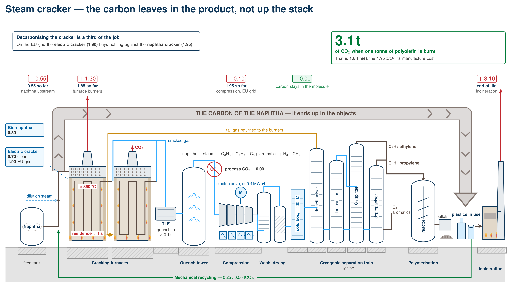
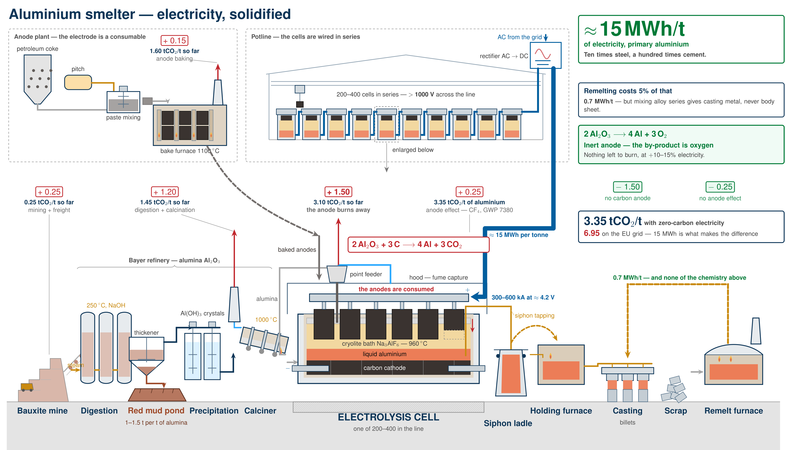

Acier, ciment, ammoniac, hydrogène, plastiques, aluminium : comment on les fabrique, et d'où sort le CO₂
Comment on fabrique aujourd'hui les six produits de base de l'industrie lourde (haut fourneau, four à clinker, vaporeformage et Haber-Bosch, vapocraqueur, électrolyse Hall-Héroult), chacun avec son usine dessinée, ce qu'il consomme et d'où sort son CO₂ par tonne. On y apprend à distinguer le CO₂ de la chimie du procédé (1,30 t sur 2,10 pour l'acier, 62 % pour le clinker, 5,7 kg sur 11 pour l'hydrogène), qu'aucune électricité ne supprime, du CO₂ du feu, qui se remplace mais rend la filière dépendante de son réseau (15 MWh par tonne d'aluminium).
1. La question et la réponse
La question. Pourquoi l’industrie lourde émet-elle autant de CO₂, et pourquoi ne suffit-il pas de remplacer ses combustibles par de l’électricité ?
La réponse, en trois phrases. Dans les usines des six produits de base (acier, ciment, ammoniac, hydrogène, plastiques, aluminium), le carbone ne sert pas seulement à chauffer : il prend l’oxygène du minerai, sort de la roche ou fournit l’hydrogène. Cette part de chimie du procédé pèse de la moitié aux deux tiers du CO₂ de l’acier, du ciment et de l’ammoniac, et aucun gain d’efficacité ni aucune électricité propre ne la supprime : il faut changer de procédé ou capter le CO₂. La part qui vient du feu se remplace par de l’électricité, mais le bilan dépend alors du réseau, au point que l’aluminium, avec 15 MWh par tonne, a l’empreinte de son électricité.
Le plan. La section 2 donne le vocabulaire. Les sections 3 à 8 présentent les six produits avec leur usine dessinée : usage, fabrication, énergie, origine du CO₂, et ce que cela implique pour le décarboner. La section 9 résume dans un tableau, la section 10 corrige quatre idées reçues, la section 11 dit ce que la note change pour les mini-projets. Les routes de décarbonation ne sont ici qu’annoncées : elles sont comparées dans la note Les routes de décarbonation de l’industrie, et leur coût dans la note Ce que coûte chaque route.
2. Les notions
Réduire un minerai, c’est lui arracher son oxygène. Le fer et l’aluminium existent dans la nature sous forme d’oxydes : hématite Fe₂O₃, alumine Al₂O₃. Pour obtenir le métal, il faut un réducteur, une substance qui prend l’oxygène. Aujourd’hui, c’est presque toujours du carbone, qui repart en CO₂.
On classe le CO₂ d’une usine en quatre origines :
| Origine | D’où il vient | Peut-on le supprimer ? |
|---|---|---|
| Chimie du procédé | du carbone qui réagit : réducteur du minerai, calcaire décomposé, méthane transformé en hydrogène | non, sauf en changeant de procédé ou en captant le CO₂ |
| Combustion | d’un combustible brûlé pour la chaleur | oui, par un autre combustible ou par l’électricité |
| Amont | de l’extraction et du transport du combustible (dont les fuites de méthane) | en partie |
| Électricité | des centrales qui alimentent l’usine | selon le réseau |
Les bilans sont donnés par tonne de produit, du berceau à la porte de l’usine (de l’extraction des matières premières au produit fini). Ce sont des ordres de grandeur pour une usine récente, en 2025.
Le CO₂ de l’électricité dépend du contenu carbone du réseau, en grammes de CO₂ par kilowattheure (gCO₂/kWh). Repères de 2023 : 56 g en France, 240 g en moyenne dans l’Union européenne (AEE), 480 g dans le monde. Les valeurs « réseau UE » de la note utilisent 240 g, un chiffre qui baisse chaque année.
3. L’acier
À quoi il sert, combien on en fait. L’acier fait les bâtiments, les ponts, les voitures, les machines. Le monde en a produit 1 887 Mt en 2024 (worldsteel).
La chaîne d’aujourd’hui. La filière dite intégrée (haut fourneau puis convertisseur, en anglais BF-BOF) enchaîne cinq ateliers :
- La cokerie cuit le charbon à environ 1 100 °C, à l’abri de l’air. Il reste du coke, presque du carbone pur, assez solide pour porter la charge du haut fourneau.
- L’agglomération fait des fines de minerai des morceaux que le gaz traverse.
- Le haut fourneau, haut d’environ 30 m, reçoit par le haut des couches alternées de minerai et de coke, et par le bas de l’air chauffé à environ 1 200 °C. Au fond, vers 1 500 °C, coule la fonte liquide, environ 500 t par coulée.
- Le convertisseur à oxygène brûle le carbone en excès de la fonte (de 4,5 % à 0,05 %) : la fonte, cassante, devient de l’acier.
- La coulée continue et le laminage en font des brames, puis des tôles.

L’énergie. Un haut fourneau consomme 300 à 350 kg de coke et 150 à 180 kg de charbon injecté par tonne de fonte. L’électricité, environ 0,6 MWh par tonne d’acier, est en grande partie produite sur place avec les gaz de l’usine.
D’où vient le CO₂. La réaction centrale du haut fourneau est :
Fe₂O₃ + 3 CO → 2 Fe + 3 CO₂
Le carbone n’est pas là pour chauffer : il est là pour prendre l’oxygène, et il ressort en CO₂ quel que soit le rendement du four. Sur 2,10 t de CO₂ par tonne d’acier, 1,30 t viennent de cette chimie, 0,55 t de la combustion dans les autres ateliers et 0,25 t de l’amont (mine et transport) : 2,24 t avec l’électricité du réseau européen.
Ce que ça implique. Aucune mesure d’efficacité ne touche les 1,30 t : seul un changement de réducteur les efface. La réduction directe (DRI, pour direct reduced iron) réduit le minerai à l’état solide, avec du gaz naturel ou de l’hydrogène, puis le fond dans un four à arc électrique. Avec de l’hydrogène, le sous-produit est de l’eau (Fe₂O₃ + 3 H₂ → 2 Fe + 3 H₂O), et l’usine consomme environ 3,5 MWh d’électricité par tonne d’acier. Le recyclage de la ferraille au four à arc évite toute réduction, mais la ferraille ne couvre qu’environ 30 % de la demande : on ne recycle pas l’acier d’un pont encore debout.
4. Le ciment
À quoi il sert, combien on en fait. Le ciment est la colle du béton. La France en a produit 16,4 Mt en 2020 (France Ciment).
La chaîne d’aujourd’hui. On cuit un mélange de calcaire (environ 80 %), d’argile, de sable et de fer pour obtenir le clinker :
- Le broyeur cru moud la roche de la carrière.
- La tour de préchauffage, une pile de cyclones, chauffe la farine avec les gaz du four.
- Le précalcinateur, vers 900 °C, décompose l’essentiel du calcaire avec environ 60 % du combustible.
- Le four rotatif, un tube incliné de 50 à 70 m, porte la matière à 1 450 °C avec le reste du combustible (charbon, coke de pétrole, déchets).
- Le refroidisseur trempe le clinker et renvoie l’air chaud au précalcinateur.
- Le broyeur à ciment moud le clinker avec du gypse et des additions (calcaire, laitier de haut fourneau, argile calcinée).

L’énergie. Un four moderne consomme 3,2 à 3,7 GJ de chaleur par tonne de clinker, à 15 % près son minimum thermodynamique. L’électricité est faible : environ 0,11 MWh par tonne de ciment.
D’où vient le CO₂. Une tonne de clinker émet 0,83 t de CO₂ en deux parts. 0,52 t viennent de la décarbonatation du calcaire, CaCO₃ → CaO + CO₂ (GIEC, 2006) : le carbone est dans la roche, le chauffer le libère. 0,31 t viennent de la combustion pour atteindre 1 450 °C. Ainsi 62 % du CO₂ direct ne vient d’aucun combustible. Avec un taux de clinker de 0,75 (0,75 t de clinker par tonne de ciment), une tonne de ciment émet 0,62 t de CO₂ direct. La moyenne mondiale était de 0,54 t en 2014, avec un taux de 0,65 (AIE et CSI, 2018).
Ce que ça implique. L’efficacité énergétique n’est plus un levier. Le moins cher est de mettre moins de clinker dans le ciment : à un taux de 0,50, le CO₂ direct tombe à 0,42 t, sans technologie nouvelle, jusqu’à la limite de la norme (EN 197). Électrifier le four ne supprime que la part du feu ; la part de la pierre demande le captage du CO₂ (note Capter le CO₂).
5. L’ammoniac
À quoi il sert, combien on en fait. L’ammoniac NH₃ est la base des engrais azotés. Le monde en a produit environ 185 Mt en 2020, dont environ 70 % pour les engrais. Il pèse environ 2 % de l’énergie consommée dans le monde et 1,3 % des émissions de CO₂ du système énergétique (AIE, 2021).
La chaîne d’aujourd’hui. On combine l’azote de l’air avec de l’hydrogène. Tout le CO₂ vient de la fabrication de l’hydrogène, à partir de gaz naturel :
- Le reformeur primaire, un four plein de tubes de catalyseur chauffés vers 850 °C : CH₄ + H₂O → CO + 3 H₂. La réaction absorbe de la chaleur, d’où les brûleurs.
- Le reformeur secondaire reçoit de l’air, qui apporte l’azote.
- La conversion du CO (shift) : CO + H₂O → CO₂ + H₂.
- La décarbonatation retire le CO₂ du gaz.
- La boucle Haber-Bosch : N₂ + 3 H₂ ⇌ 2 NH₃, vers 450 °C et 200 bar. Seuls 15 % du gaz réagissent à chaque passage : on condense l’ammoniac et on renvoie le reste au réacteur.

L’énergie. Le gaz naturel sert de matière et de combustible. La compression consomme environ 0,25 MWh d’électricité par tonne.
D’où vient le CO₂. Bilan du vaporeformage : CH₄ + 2 H₂O → CO₂ + 4 H₂. Fabriquer de l’hydrogène à partir de méthane produit du CO₂ par construction, même avec un four parfait. Sur 1,95 t de CO₂ par tonne de NH₃, 1,15 t viennent de cette chimie, 0,55 t des brûleurs du four et 0,25 t de l’amont du gaz (2,01 t avec le réseau européen). L’usine a deux sorties de CO₂ : un flux de procédé concentré, facile à capter, et les fumées du four, diluées dans l’azote de l’air, chères à capter.
Ce que ça implique. Soit capter le CO₂, avec un reformeur autotherme (ATR) qui n’a qu’une sortie, concentrée. Soit faire l’hydrogène par électrolyse, avec la même boucle : environ 11 MWh par tonne de NH₃, et le CO₂ de cette électricité.
6. L’hydrogène
À quoi il sert, combien on en fait. Le monde a consommé environ 97 Mt d’hydrogène en 2023 : 44 % pour le raffinage du pétrole, 33 % pour l’ammoniac, 17 % pour le méthanol, 6 % pour l’acier. La mobilité en prend moins de 0,1 %. Les deux tiers viennent du gaz naturel, environ un cinquième du charbon, et moins de 1 % est bas carbone (AIE, 2024). Usages et coûts : voir la note L’hydrogène, usages, production, coût.
La chaîne d’aujourd’hui. Le vaporeformeur (SMR, steam methane reforming) est celui de la section 5, sans l’azote : tubes catalytiques vers 900 °C, récupération de la chaleur des fumées, réacteur de shift, puis purification par adsorption (PSA, pressure swing adsorption) qui donne un hydrogène pur à 99,9 %.

L’énergie. Environ 3,3 kg de méthane par kilogramme d’hydrogène, comme matière et comme combustible, et 0,8 kWh d’électricité.
D’où vient le CO₂. 11,0 kg de CO₂ par kilogramme d’hydrogène : 5,7 kg de chimie (le carbone du méthane), 3,3 kg des brûleurs du four, 2,0 kg de l’amont du gaz, en supposant des fuites de méthane faibles, d’environ 0,5 % (Bauer et al., 2022). Avec le réseau européen, 11,19 kg.
Ce que ça implique. Un électrolyseur industriel consomme environ 53 kWh d’électricité par kilogramme d’hydrogène (AIE, 2026). Il n’émet que ce qu’émet son électricité. Il fait jeu égal avec le vaporeformeur à 11,19 ÷ 53 ≈ 210 gCO₂/kWh. Sur le réseau européen moyen (240 g), il émet 12,72 kg par kilogramme, plus que le vaporeformeur ; avec l’électricité française (56 g), 2,97 kg. « Vert » est une propriété de l’électricité, pas de la machine.
7. Les oléfines, base des plastiques
À quoi elles servent, combien on en fait. Le vapocraqueur casse des hydrocarbures longs (naphta, éthane) en petites molécules réactives : éthylène, propylène, butadiène, aromatiques. L’industrie les appelle les HVC (high-value chemicals). Elles deviennent polyéthylène, polypropylène, PVC, solvants, textiles. Le monde a produit 460 Mt de plastique en 2019 (OCDE, 2022).
La chaîne d’aujourd’hui.
- Les fours de craquage : le naphta, dilué dans la vapeur, traverse des serpentins chauffés vers 850 °C en moins d’une seconde, sinon il finirait en coke.
- La trempe fige la réaction ; la compression suit.
- La séparation cryogénique, vers −100 °C, trie les produits dans une série de colonnes.
- La polymérisation enchaîne l’éthylène en polyéthylène.

L’énergie. Le combustible des fours est surtout le gaz de queue de l’usine : l’hydrogène et le méthane produits par le craquage, séparés puis renvoyés aux brûleurs. L’électricité, surtout pour la compression, est d’environ 0,4 MWh par tonne d’HVC.
D’où vient le CO₂. C’est la seule des six filières où la chimie du procédé n’émet rien : le carbone du naphta part dans le produit. Par tonne d’HVC, l’usine manipule environ 1,21 t de carbone : 0,86 t (71 %) restent dans la molécule, 0,35 t sont brûlées en gaz de queue. Le bilan est de 1,85 t de CO₂ par tonne : 1,30 t des brûleurs et 0,55 t de l’amont (extraction et raffinage du pétrole), 1,95 t avec le réseau européen.
Ce que ça implique. Le carbone stocké dans l’objet revient en fin de vie. Incinérer une tonne de polyoléfine libère 0,86 × 44/12 ≈ 3,1 t de CO₂, 1,6 fois ce qu’a coûté sa fabrication. Décarboner le craqueur ne traite donc qu’environ un tiers du problème. Seules les routes où le carbone circule (recyclage, carbone d’origine biologique, CO₂ capté comme matière) ferment le bilan.
8. L’aluminium
À quoi il sert, combien on en fait. L’aluminium, léger et inoxydable, sert aux transports, à l’emballage, au bâtiment et aux câbles électriques. En 2022, 108 Mt ont été mises sur le marché, dont 36 % d’aluminium recyclé (IAI).
La chaîne d’aujourd’hui.
- Le raffinage Bayer attaque la bauxite à la soude vers 250 °C, puis calcine vers 1 000 °C : il faut environ 2 t d’alumine Al₂O₃ par tonne d’aluminium, et il reste des boues rouges.
- Les anodes sont des blocs de carbone cuits vers 1 100 °C.
- L’électrolyse Hall-Héroult : dans une cuve, un bain de cryolithe fondue vers 960 °C dissout l’alumine ; les anodes de carbone y plongent et l’aluminium liquide se dépose au fond. Chaque cuve tire 300 à 600 kA sous 4,2 V ; on en aligne 200 à 400 en série.
- La coulée donne lingots et billettes.

L’énergie. L’électrolyse consomme environ 15 MWh d’électricité par tonne : 25 fois l’aciérie intégrée, plus de 100 fois la cimenterie. D’où les alumineries installées près des barrages, en Norvège, au Québec ou en Islande.
D’où vient le CO₂. La réaction est 2 Al₂O₃ + 3 C → 4 Al + 3 CO₂ : l’anode de carbone est un réactif qui s’use. Elle émet environ 1,50 t de CO₂ par tonne d’aluminium. Quand l’alumine du bain s’épuise, la cuve produit des perfluorocarbures (PFC : CF₄, C₂F₆), des gaz des milliers de fois plus réchauffants que le CO₂ : environ 0,25 t d’équivalent CO₂ dans une usine récente, 0,8 t en moyenne mondiale (IAI, 2023). S’y ajoutent 1,35 t de combustion (surtout le raffinage Bayer, dans une raffinerie au gaz) et 0,25 t d’amont : 3,35 t avant électricité. Avec le réseau européen, les 15 MWh ajoutent 3,60 t : 6,95 t. La moyenne mondiale est de 14,8 t, dont 8,6 t pour l’électricité, produite en majorité au charbon (IAI, 2023).
Ce que ça implique. Une anode inerte, qui ne se consomme pas, ferait 2 Al₂O₃ → 4 Al + 3 O₂ : le sous-produit serait de l’oxygène, pour 10 à 15 % d’électricité en plus. Mais décarboner l’aluminium primaire est d’abord un problème de système électrique. Le recyclage ne demande qu’environ 0,7 MWh par tonne, 5 % de l’énergie de la production primaire ; sa limite est le mélange des alliages, pas le gisement.
9. Tableau de synthèse
Par tonne de produit, usine récente, du berceau à la porte, électricité au réseau européen de 2023 (240 gCO₂/kWh).
| Produit | Production | Procédé | Électricité (MWh/t) | CO₂ (t/t) | dont chimie | Le verrou |
|---|---|---|---|---|---|---|
| Acier | 1 887 Mt (monde, 2024) | haut fourneau + convertisseur | 0,6 | 2,24 | 1,30 | le carbone est le réducteur |
| Ciment (taux de clinker 0,75) | 16,4 Mt (France, 2020) | four à clinker | 0,11 | 0,67 | 0,39 | le CO₂ sort de la pierre |
| Ammoniac | ≈ 185 Mt (monde, 2020) | vaporeformage + Haber-Bosch | 0,25 | 2,01 | 1,15 | l’hydrogène vient du méthane |
| Hydrogène | ≈ 97 Mt (monde, 2023) | vaporeformage | 0,8 | 11,19 | 5,7 | l’hydrogène vient du méthane |
| Oléfines (HVC) | 460 Mt de plastique (monde, 2019) | vapocraqueur | 0,4 | 1,95, puis 3,1 en fin de vie | 0 | le carbone part dans le produit |
| Aluminium primaire | 108 Mt dont 36 % recyclé (monde, 2022) | Bayer + Hall-Héroult | 15 | 6,95 | 1,75 (anode et PFC) | l’électricité |
La colonne « dont chimie » (chimie du procédé) dit ce qui ne disparaît pas en changeant de combustible ; la colonne « électricité », combien la filière dépend de son réseau.
10. Quatre idées reçues
« Une tonne de ciment émet une tonne de CO₂. » Non : 0,83 t par tonne de clinker, environ 0,62 t par tonne de ciment. C’est la chaux qui est proche d’une tonne.
« Il suffit d’améliorer l’efficacité des fours. » Pas pour le ciment, déjà à 15 % de son minimum, ni pour le haut fourneau, dont le carbone est fixé par la chimie.
« L’hydrogène, c’est d’abord pour les voitures. » Elles en consomment moins de 0,1 %. L’hydrogène est d’abord un problème industriel.
« Le plastique émet surtout à l’usine. » Sa fabrication émet 1,95 t de CO₂ par tonne ; son incinération, 3,1 t de plus.
11. Ce que ça change pour les mini-projets
Trois mini-projets du cours s’appuient sur ces usines.
À quel prix du CO₂ l’industrie change-t-elle de procédé ? Le modèle choisit, pour chaque produit, entre le procédé d’aujourd’hui, le captage et l’hydrogène. Deux grandeurs de cette note comptent. La part de chimie du procédé : un prix du CO₂ ne la supprime qu’en changeant de procédé. La consommation par tonne, qui donne la demande d’électricité et d’hydrogène : environ 3,5 MWh par tonne d’acier à l’hydrogène, 11 MWh par tonne d’ammoniac électrolytique, 53 TWh par million de tonnes d’hydrogène électrolytique.
Que vaut la flexibilité d’une aciérie à réduction directe ? La cuve accepte du gaz naturel ou de l’hydrogène : l’usine peut choisir chaque heure. À 3,5 MWh par tonne, une aciérie de 2 Mt par an consomme environ 7 TWh, soit 0,8 GW en continu. L’hydrogène par tonne dépend du chauffage du gaz réducteur : environ 55 kg et 0,7 MWh s’il est électrique, environ 80 kg par tonne d’acier s’il se fait à l’hydrogène (51 kg et 3,48 MWh par tonne chez Vogl, Åhman et Nilsson, 2018).
Que vaut le n-ième gigawatt flexible, et comment la demande de l’industrie fait-elle le prix ? Les gigawatts qui modulent produisent de l’hydrogène (électrolyse) ou de la chaleur (chaudières électriques, voir la note La chaleur dans l’industrie). Les consommations par tonne de cette note donnent la taille des électrolyseurs. Et une demande électrifiée n’est bas carbone que si l’électricité l’est : au-dessus de 210 gCO₂/kWh, l’électrolyseur émet plus que le vaporeformeur.
12. Ce qu’il faut retenir
Le CO₂ de l’industrie lourde n’est pas qu’un CO₂ de chauffage. Dans l’acier, le ciment, l’ammoniac et l’hydrogène, la moitié aux deux tiers vient de la chimie. Pour la supprimer, il faut changer de procédé ou capter le CO₂.
Chaque filière a son verrou. Pour l’acier, le réducteur. Pour le ciment, la pierre. Pour l’ammoniac et l’hydrogène, le méthane. Pour les plastiques, la fin de vie. Pour l’aluminium, l’électricité.
Électrifier transfère la question au système électrique. Plus une filière consomme d’électricité par tonne (0,11 MWh pour le ciment, 15 MWh pour l’aluminium, 53 MWh pour l’hydrogène électrolytique), plus son bilan dépend du réseau.
13. Sources
- AEE (Agence européenne pour l’environnement), Greenhouse gas emission intensity of electricity generation in Europe, indicateur, données 2023.
- AIE, Ammonia Technology Roadmap, 2021, p. 16 et 25, https://www.iea.org/reports/ammonia-technology-roadmap.
- AIE, Global Hydrogen Review 2024, encadré 2.1 et p. 28 à 32.
- AIE, Global Hydrogen Review 2026 (électrolyseur, 53 kWh/kg en 2025).
- AIE et CSI (WBCSD), Technology Roadmap: Low-Carbon Transition in the Cement Industry, 2018.
- Bauer C. et al., On the climate impacts of blue hydrogen production, Sustainable Energy & Fuels 6 (2022) 66-75, doi:10.1039/D1SE01508G.
- France Ciment, Le ciment en chiffres, édition 2022.
- GIEC, Lignes directrices 2006 pour les inventaires nationaux de gaz à effet de serre, vol. 3, chap. 2 (facteur de décarbonatation du clinker).
- IAI (International Aluminium Institute), Aluminium Carbon Footprint FAQs, moyenne mondiale 2023, https://international-aluminium.org/landing/aluminium-carbon-footprint-faqs/.
- IAI, Emissions reduction factsheet, v3.6, juin 2024 (offre 2022 et part recyclée), https://international-aluminium.org/wp-content/uploads/2024/09/Emissions-reduction-factsheet-v3.6-1.pdf.
- OCDE, Global Plastics Outlook: Economic Drivers, Environmental Impacts and Policy Options, 2022, p. 14.
- Vogl V., Åhman M., Nilsson L.J., Assessment of hydrogen direct reduction for fossil-free steelmaking, Journal of Cleaner Production 203 (2018) 736-745.
- worldsteel, World Steel in Figures et Steel Statistical Yearbook (séries 1950 à 2024).
Pour aller plus loin : AIE, Iron and Steel Technology Roadmap, 2020 ; AIE, The Future of Petrochemicals, 2018 ; ADEME, Plan de transition sectoriel de l’industrie cimentière en France, 2021.
14. Vidéos, billets et posts sur le même sujet
Des vidéos courtes, des billets de blog et des posts LinkedIn de l’auteur reprennent des points de cette note.
- Décarboner l’industrie lourde : la synthèse de 51 vidéos (post LinkedIn repris sur le blog, avec figures et sources ; le post sur LinkedIn) : la synthèse des séries vidéo sur l’industrie lourde : plus de la moitié du CO₂ vient de la chimie du procédé, pas de la combustion.
- Acier 2/6 — d’où viennent les 2,10 tonnes de CO2 d’une tonne d’acier (vidéo, 2 min ; la série « Décarbonation de la fabrication de l’acier ») : le compte du CO₂ d’une tonne d’acier, étape par étape.
- Ciment 2/4 — d’où viennent les 620 kilos de CO2 d’une tonne de ciment (vidéo, 2 min ; la série « Décarbonation de la fabrication du ciment ») : le compte du CO₂ d’une tonne de ciment, dont la part qui sort du calcaire.
- Hydrogène 2/5 — d’où sortent les 11 kilos de CO2 d’un kilo d’hydrogène (vidéo, 2 min ; la série « Décarbonation de la fabrication de l’hydrogène ») : le compte du CO₂ d’un kilo d’hydrogène fait au gaz, entre chimie et brûleurs.
- Plastique 4/11 — où est passé le carbone : les deux tonnes de CO2 d’une tonne de plastique (vidéo, 1 min ; la série « Le plastique, de son histoire à sa décarbonation ») : le compte du CO₂ d’une tonne d’oléfines, du pétrole brut au vapocraqueur.
- Aluminium 2/4 — d’où viennent les 3,35 tonnes de CO2 d’une tonne d’aluminium, et les 6,95 (vidéo, 2 min ; la série « Décarbonation de la fabrication de l’aluminium ») : le compte du CO₂ d’une tonne d’aluminium : l’anode qui se consomme, et l’électricité qui fait passer de 3,35 à 6,95 t.
Télécharger la version PDF (les liens y restent actifs).
Notes voisines
- Décarboner l'acier, le ciment, l'hydrogène, l'ammoniac, les oléfines et l'aluminium : les routes et leurs émissions
- Ce que coûte la décarbonation de l'industrie : coût par tonne, surcoût et prix du CO₂
- Capter le CO₂ d'une usine : d'où il vient, comment on l'attrape, ce qu'on en fait, ce que ça coûte
- L'hydrogène : à quoi il sert, comment on le produit, ce qu'il coûte
- La chaleur des usines : combien, à quelle température, et ce que l'électricité peut en faire